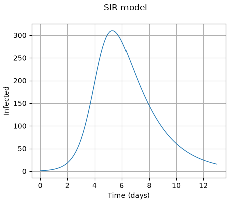
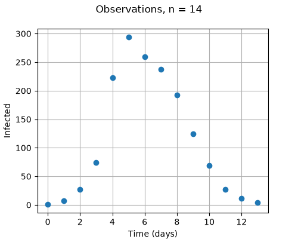
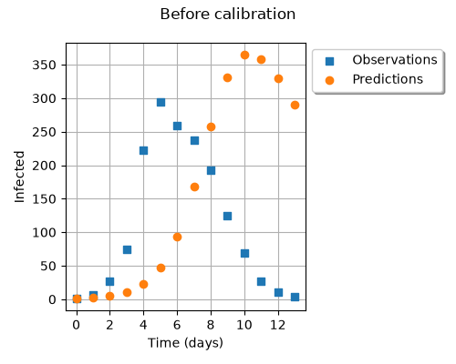
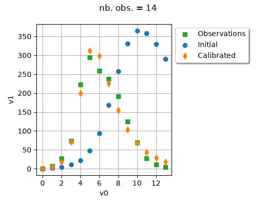
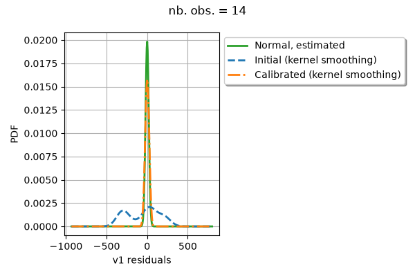
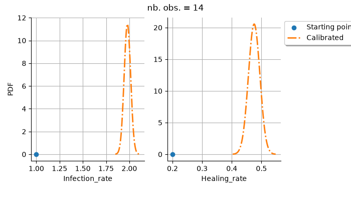

Note
Go to the end to download the full example code.
Calibration example#
The objective of this example is to define a physical model using the otfmi library
and to calibrate its parameters to fit the observed data.
This uses the openturns.NonLinearLeastSquaresCalibration class.
The data is sourced from [anonymous1978], who describes an influenza epidemic within a school setting.
Meaning of variables:
infection_rate (or “beta”): average number of contacts per person per time, multiplied by the probability of disease transmission in a contact between a susceptible and an infectious subject
healing_rate (unit : 1/day) (or “gamma”): rate at which infected individuals transition from the Infected (I) category to the Recovered (R) category.
Other variables:
D : average duration of infection (unit : days) D = 1 / gamma
R0 : number of contacts by an infectious individual with others before the infectious has been removed R0 = beta / gamma
Setup finite difference step#
There is no scaling issue with the healing rate, which value is close to 0.5. The problem is that the infection rate has an order of magnitude close to 10^{-3}. This can cause problems in the optimization step, if the optimization algorithm uses the gradient (which is far more efficient). Indeed, the finite different method may use a wrong differentiation step which can produce inaccurate gradients.
In the current code, we use the near to optimal values of the step. These values were computed using numericalderivative, a Python package which computes the near to optimal differentiation step of a computer code (see https://github.com/mbaudin47/numericalderivative). Another method would be to scale up the infection rate so that its order of magnitude is close to 1.
Cache memory#
The problem is that the PointToFieldFunction has no MemoizeFunction: https://github.com/openturns/openturns/issues/2802 The current code implements its own cache.
References#
Girard2024: OtFMI: interfacing OpenTURNS with the leading standard for model exchange 14th June 2024, Sylvain Girard (girard@phimeca.com), Pascal Borel (pascal.borel@edf.fr)
Girard2019: S. Girard, “A probabilistic take on system modeling with Modelica and Python”, Février 2019, https://sylvaingirard.net/pdf/girard17-probabilistic_modelica_python.pdf
import otfmi
import otfmi.example.utility
import openturns as ot
import openturns.viewer as otv
import pyfmi
from matplotlib import pylab as plt
ot.ResourceMap.SetAsString("Contour-DefaultColorMap", "viridis")
Define bounds for parameters
infection_rate_min = 1.0e-3 # beta
infection_rate_max = 10.0e-3
healing_rate_min = 0.1 # gamma
healing_rate_max = 0.9
infection_rate = 7.0e-3 # beta (/ day)
healing_rate = 0.3 # gamma (/ day)
total_population = 763.0
reference_parameters = [infection_rate, healing_rate]
print("References parameters = ")
print(f"infection_rate = {infection_rate}")
print(f"healing_rate = {healing_rate}")
References parameters =
infection_rate = 0.007
healing_rate = 0.3
average_infection_duration = 1.0 / healing_rate
print(f"average_infection_duration = {average_infection_duration:.4f} (days)")
R0 = infection_rate / healing_rate
print(f"R0 = {R0:.4f}")
average_infection_duration = 3.3333 (days)
R0 = 0.0233
start_time = 0.0
final_time = 13.0
number_of_time_steps = 100
step = (final_time - start_time) / (number_of_time_steps - 1)
time_mesh = ot.RegularGrid(start_time, step, number_of_time_steps)
vertices = time_mesh.getVertices()
Select the FMU
path_fmu = otfmi.example.utility.get_path_fmu("epid")
print(f"path_fmu = {path_fmu}")
path_fmu = /tmp/otfmi/example/file/fmu/linux-x86_64/epid.fmu
Inspect variables
check_model = pyfmi.load_fmu(path_fmu)
list_of_variables = list(check_model.get_model_variables().keys())
for i in range(len(list_of_variables)):
print(f"Variable #{i} / {len(list_of_variables)} = {list_of_variables[i]}")
Variable #0 / 9 = infected
Variable #1 / 9 = removed
Variable #2 / 9 = susceptible
Variable #3 / 9 = der(infected)
Variable #4 / 9 = der(removed)
Variable #5 / 9 = der(susceptible)
Variable #6 / 9 = healing_rate
Variable #7 / 9 = infection_rate
Variable #8 / 9 = total_pop
Create function
p2f = otfmi.FMUPointToFieldFunction(
path_fmu,
mesh=time_mesh,
inputs_fmu=["infection_rate", "healing_rate", "total_pop"],
outputs_fmu=["infected"],
start_time=start_time,
final_time=final_time,
)
Evaluate model

Get the number of infected
infected = [v[0] for v in y]
infected[:5]
[1.0, 0.9621144526886833, 0.9256640819317842, 0.8905945256819641, 0.8568534808389988]
Data (time, confined, convalescent)
Select the number of observations to consider full dataset : number_of_observations = 14
number_of_observations = 14
timeObservations = data[:, 0]
timeObservations
graph = ot.Graph(
f"Observations, n = {number_of_observations}", "Time (days)", "Infected", True
)
cloud = ot.Cloud(timeObservations, populationObservations)
cloud.setPointStyle("circle")
graph.add(cloud)
_ = otv.View(graph, figure_kw={"figsize": (4.0, 3.0)})

Create an epidemiological model, evaluated at one single time.
class SIRModelPointwise(ot.OpenTURNSPythonFunction):
def __init__(
self,
path_fmu,
total_pop=763.0,
parameter_threshold=1.0e-14,
start_time=0.0,
step=1.0,
number_of_time_steps=14,
verbose=False,
) -> None:
"""
Create an epidemiological model
Parameters
----------
path_fmu : str
The path to the FMU file.
total_pop : float, > 0
The total population.
parameter_threshold : float, > 0, close to zero
If two vectors of parameters have an Euclidian distance lower
than parameter_threshold, then these two parameters are considered equal.
If a parameter vector is to be evaluated and is different from the
previous one, then it is actually evaluated using the FMU model.
In this case, the value of current_infected is updated.
Otherwise, the value of current_infected is returned.
start_time : float
The initial time of the time interval.
step : float, > 0
The time step.
number_of_time_steps : int
The number of time values to be considered.
"""
self.path_fmu = path_fmu
super().__init__(3, 1)
self.setInputDescription(["t", "Infection_rate", "Healing_rate"])
self.setOutputDescription(["Infected"])
self.current_parameters = None
self.current_infected = None
self.parameter_threshold = parameter_threshold
self.total_pop = total_pop
# Create mesh
self.start_time = start_time
self.step = step
self.number_of_time_steps = number_of_time_steps
self.final_time = start_time + (number_of_time_steps - 1) * step
if verbose:
print(f"start_time = {self.start_time}")
print(f"step = {self.step}")
print(f"number_of_time_steps = {self.number_of_time_steps}")
print(f"final_time = {self.final_time}")
self.time_mesh = ot.RegularGrid(start_time, step, number_of_time_steps)
# Create model
self.FMUmodel = otfmi.FMUPointToFieldFunction(
path_fmu,
mesh=self.time_mesh,
inputs_fmu=["infection_rate", "healing_rate", "total_pop"],
outputs_fmu=["infected"],
start_time=self.start_time,
final_time=self.final_time,
)
self.verbose = verbose
def _exec(self, X):
"""
Evaluate the FMU model
Parameters
----------
X : ot.Point(3)
The variables (t, infection_rate, healing_rate)
Returns
-------
Y : ot.Point(1)
The number of infected at time t.
"""
t, infection_rate, healing_rate = X
# See if parameters are different from the previous ones
if self.current_parameters is None:
is_parameter_different = True
else:
current_parameters = ot.Point([infection_rate, healing_rate])
change_parameter = current_parameters - self.current_parameters
is_parameter_different = change_parameter.norm() > self.parameter_threshold
if self.verbose:
print(f"Is parameter different? {is_parameter_different}")
# Update the number of infected, if necessary
if is_parameter_different:
self.current_parameters = ot.Point([infection_rate, healing_rate])
current_input = ot.Point([infection_rate, healing_rate, self.total_pop])
self.current_infected = self.FMUmodel(current_input).asPoint()
if self.verbose:
print("New parameters! Update number of infected.")
print(f"current_parameters = {self.current_parameters}")
print(f"current_infected = {self.current_infected}")
# Get the number of infected corresponding to the given time
if t < self.start_time or t > self.final_time:
raise ValueError(
f"Time t = {t} is not in time range [{self.start_time}, {self.final_time}]"
)
# Calcul direct de l'indice le plus proche.
# Actuellement, les données sont disponibles au pas de temps
# égal à 1 seconde.
# C'est la raison pour laquelle la discrétisation utilise
# également une seconde.
# Si le pas de temps est différent de 1, alors le calcul de l'indice
# correspondant est un peu plus compliqué.
# Nous utilisons la fonction round pour obtenir l'entier le plus
# proche du ratio.
relative_time_step = (t - self.start_time) / self.step
time_index = int(round(relative_time_step))
# Sécurité pour ne pas dépasser la taille du vecteur current_infected.
time_index = min(time_index, self.number_of_time_steps - 1)
current_infected = self.current_infected[time_index]
if self.verbose:
print(f"Time = {t}, index = {time_index}, infected = {current_infected}")
return [current_infected]
epidemiologicModel = SIRModelPointwise(
path_fmu, number_of_time_steps=number_of_observations, verbose=False
)
epidemiologicModel
OpenTURNSPythonFunction( ['t', 'Infection_rate', 'Healing_rate'] #3 ) -> ['Infected'] #1
model = ot.Function(epidemiologicModel)
Setup finite difference step. This is crucial here because infection rate has a scale close to 10^{-3}. An alternative would be to scale up the infection rate so that its order of magnitude is close to 1.
gradStep = ot.ConstantStep([1.0, 1.335e-08, 5.722e-07]) # Constant gradient step
model.setGradient(ot.CenteredFiniteDifferenceGradient(gradStep, model.getEvaluation()))
print("Physical Model Inputs:", model.getInputDescription())
print("Physical Model Parameters:", model.getParameterDescription())
Physical Model Inputs: [t,Infection_rate,Healing_rate]
Physical Model Parameters: []
infection_rate = 0.007
healing_rate = 0.3
thetaPrior = [infection_rate, healing_rate]
epidParametric = ot.ParametricFunction(model, [1, 2], thetaPrior)
print("Parametric Model Inputs:", epidParametric.getInputDescription())
print("Parametric Model Parameters:", epidParametric.getParameterDescription())
Parametric Model Inputs: [t]
Parametric Model Parameters: [Infection_rate,Healing_rate]
[ Infected ]
0 : [ 1 ]
1 : [ 0.745184 ]
2 : [ 0.555293 ]
3 : [ 0.413794 ]
4 : [ 0.30835 ]
5 : [ 0.229776 ]
6 : [ 0.171224 ]
7 : [ 0.127593 ]
8 : [ 0.0950794 ]
9 : [ 0.070851 ]
10 : [ 0.0527968 ]
11 : [ 0.0393429 ]
12 : [ 0.0293176 ]
13 : [ 0.0218467 ]
graph = ot.Graph("Before calibration", "Time (days)", "Infected", True, "upper left")
# Observations
cloud = ot.Cloud(timeObservations, populationObservations)
cloud.setLegend("Observations")
cloud.setPointStyle(
ot.ResourceMap.GetAsString("CalibrationResult-ObservationPointStyle")
)
graph.add(cloud)
# Predictions
cloud = ot.Cloud(timeObservations, populationPredicted)
cloud.setLegend("Predictions")
cloud.setPointStyle(ot.ResourceMap.GetAsString("CalibrationResult-PriorPointStyle"))
graph.add(cloud)
graph.setLegendPosition("upper left")
graph.setLegendCorner([1.0, 1.0])
graph.setIntegerXTick(True)
view = otv.View(graph, figure_kw={"figsize": (5.0, 3.0)})

Evaluate the model at a single time
def plotDistributionGridPDF(distribution):
"""
Plot the marginal and bi-dimensional iso-PDF on a grid.
Parameters
----------
distribution : ot.Distribution
The distribution.
Returns
-------
grid : ot.GridLayout(dimension, dimension)
The grid of plots.
"""
dimension = distribution.getDimension()
grid = ot.GridLayout(dimension, dimension)
for i in range(dimension):
for j in range(dimension):
if i == j:
distributionI = distribution.getMarginal([i])
graph = distributionI.drawPDF()
else:
distributionJI = distribution.getMarginal([j, i])
graph = distributionJI.drawPDF()
graph.setLegends([""])
graph.setTitle("")
if i < dimension - 1:
graph.setXTitle("")
if j > 0:
graph.setYTitle("")
grid.setGraph(i, j, graph)
grid.setTitle("Iso-PDF values")
return grid
Calibration with non linear least squares Check that we can evaluate the parametric function.
ot.ResourceMap.SetAsUnsignedInteger("NonLinearLeastSquaresCalibration-BootstrapSize", 0)
# ot.ResourceMap.SetAsUnsignedInteger(
# "NonLinearLeastSquaresCalibration-MultiStartSize", 10
# )
calibrationAlgorithm = ot.NonLinearLeastSquaresCalibration(
epidParametric, timeObservations, populationObservations, thetaPrior
)
calibrationAlgorithm.setOptimizationAlgorithm(ot.CMinpack())
calibrationAlgorithm.run()
calibrationResult = calibrationAlgorithm.getResult()
Traceback (most recent call last):
File "/usr/lib/python3.14/site-packages/openturns/func.py", line 14400, in __call__
Y = self._exec(pt)
File "/tmp/otfmi/otfmi.py", line 590, in _exec
return self.base.simulate(value_input=value_input, **kwargs)
~~~~~~~~~~~~~~~~~~^^^^^^^^^^^^^^^^^^^^^^^^^^^^^^^^^^^
File "/tmp/otfmi/otfmi.py", line 286, in simulate
simulation = fmi.simulate(
self._model,
...<3 lines>...
**kwargs_simulate
)
File "/tmp/otfmi/fmi.py", line 82, in simulate
return model.simulate(**kwargs)
~~~~~~~~~~~~~~^^^^^^^^^^
File "src/pyfmi/fmi2.pyx", line 4130, in pyfmi.fmi2.FMUModelCS2.simulate
File "src/pyfmi/fmi_base.pyx", line 214, in pyfmi.fmi_base.ModelBase._exec_simulate_algorithm
File "/usr/lib/python3.14/site-packages/pyfmi/fmi_algorithm_drivers.py", line 1074, in solve
self.result_handler.integration_point()
~~~~~~~~~~~~~~~~~~~~~~~~~~~~~~~~~~~~~^^
File "/usr/lib/python3.14/site-packages/pyfmi/common/io.py", line 1931, in integration_point
self.real_sol += [model.get_real(self.real_var_ref)]
~~~~~~~~~~~~~~^^^^^^^^^^^^^^^^^^^
File "src/pyfmi/fmi2.pyx", line 691, in pyfmi.fmi2.FMUModelBase2.get_real
File "src/pyfmi/fmi2.pyx", line 724, in pyfmi.fmi2.FMUModelBase2.get_real
pyfmi.exceptions.FMUException: Failed to get the Real values.
Traceback (most recent call last):
File "/usr/lib/python3.14/site-packages/openturns/func.py", line 10861, in _exec_sample
return [self._exec(point) for point in X]
~~~~~~~~~~^^^^^^^
File "/tmp/doc/examples/application/plot_calibration.py", line 283, in _exec
self.current_infected = self.FMUmodel(current_input).asPoint()
~~~~~~~~~~~~~^^^^^^^^^^^^^^^
File "/usr/lib/python3.14/site-packages/openturns/func.py", line 14117, in __call__
return _func.PointToFieldFunction___call__(self, *args)
~~~~~~~~~~~~~~~~~~~~~~~~~~~~~~~~~~~^^^^^^^^^^^^^
RuntimeError: InternalException : Python exception: <class 'pyfmi.exceptions.FMUException'>: Failed to get the Real values.
Traceback (most recent call last):
File "/usr/lib/python3.14/site-packages/openturns/func.py", line 14400, in __call__
Y = self._exec(pt)
File "/tmp/otfmi/otfmi.py", line 590, in _exec
return self.base.simulate(value_input=value_input, **kwargs)
~~~~~~~~~~~~~~~~~~^^^^^^^^^^^^^^^^^^^^^^^^^^^^^^^^^^^
File "/tmp/otfmi/otfmi.py", line 286, in simulate
simulation = fmi.simulate(
self._model,
...<3 lines>...
**kwargs_simulate
)
File "/tmp/otfmi/fmi.py", line 82, in simulate
return model.simulate(**kwargs)
~~~~~~~~~~~~~~^^^^^^^^^^
File "src/pyfmi/fmi2.pyx", line 4130, in pyfmi.fmi2.FMUModelCS2.simulate
File "src/pyfmi/fmi_base.pyx", line 214, in pyfmi.fmi_base.ModelBase._exec_simulate_algorithm
File "/usr/lib/python3.14/site-packages/pyfmi/fmi_algorithm_drivers.py", line 1074, in solve
self.result_handler.integration_point()
~~~~~~~~~~~~~~~~~~~~~~~~~~~~~~~~~~~~~^^
File "/usr/lib/python3.14/site-packages/pyfmi/common/io.py", line 1931, in integration_point
self.real_sol += [model.get_real(self.real_var_ref)]
~~~~~~~~~~~~~~^^^^^^^^^^^^^^^^^^^
File "src/pyfmi/fmi2.pyx", line 691, in pyfmi.fmi2.FMUModelBase2.get_real
File "src/pyfmi/fmi2.pyx", line 724, in pyfmi.fmi2.FMUModelBase2.get_real
pyfmi.exceptions.FMUException: Failed to get the Real values.
Traceback (most recent call last):
File "/usr/lib/python3.14/site-packages/openturns/func.py", line 10861, in _exec_sample
return [self._exec(point) for point in X]
~~~~~~~~~~^^^^^^^
File "/tmp/doc/examples/application/plot_calibration.py", line 283, in _exec
self.current_infected = self.FMUmodel(current_input).asPoint()
~~~~~~~~~~~~~^^^^^^^^^^^^^^^
File "/usr/lib/python3.14/site-packages/openturns/func.py", line 14117, in __call__
return _func.PointToFieldFunction___call__(self, *args)
~~~~~~~~~~~~~~~~~~~~~~~~~~~~~~~~~~~^^^^^^^^^^^^^
RuntimeError: InternalException : Python exception: <class 'pyfmi.exceptions.FMUException'>: Failed to get the Real values.
Traceback (most recent call last):
File "/usr/lib/python3.14/site-packages/openturns/func.py", line 14400, in __call__
Y = self._exec(pt)
File "/tmp/otfmi/otfmi.py", line 590, in _exec
return self.base.simulate(value_input=value_input, **kwargs)
~~~~~~~~~~~~~~~~~~^^^^^^^^^^^^^^^^^^^^^^^^^^^^^^^^^^^
File "/tmp/otfmi/otfmi.py", line 286, in simulate
simulation = fmi.simulate(
self._model,
...<3 lines>...
**kwargs_simulate
)
File "/tmp/otfmi/fmi.py", line 82, in simulate
return model.simulate(**kwargs)
~~~~~~~~~~~~~~^^^^^^^^^^
File "src/pyfmi/fmi2.pyx", line 4130, in pyfmi.fmi2.FMUModelCS2.simulate
File "src/pyfmi/fmi_base.pyx", line 214, in pyfmi.fmi_base.ModelBase._exec_simulate_algorithm
File "/usr/lib/python3.14/site-packages/pyfmi/fmi_algorithm_drivers.py", line 1074, in solve
self.result_handler.integration_point()
~~~~~~~~~~~~~~~~~~~~~~~~~~~~~~~~~~~~~^^
File "/usr/lib/python3.14/site-packages/pyfmi/common/io.py", line 1931, in integration_point
self.real_sol += [model.get_real(self.real_var_ref)]
~~~~~~~~~~~~~~^^^^^^^^^^^^^^^^^^^
File "src/pyfmi/fmi2.pyx", line 691, in pyfmi.fmi2.FMUModelBase2.get_real
File "src/pyfmi/fmi2.pyx", line 724, in pyfmi.fmi2.FMUModelBase2.get_real
pyfmi.exceptions.FMUException: Failed to get the Real values.
Traceback (most recent call last):
File "/usr/lib/python3.14/site-packages/openturns/func.py", line 10861, in _exec_sample
return [self._exec(point) for point in X]
~~~~~~~~~~^^^^^^^
File "/tmp/doc/examples/application/plot_calibration.py", line 283, in _exec
self.current_infected = self.FMUmodel(current_input).asPoint()
~~~~~~~~~~~~~^^^^^^^^^^^^^^^
File "/usr/lib/python3.14/site-packages/openturns/func.py", line 14117, in __call__
return _func.PointToFieldFunction___call__(self, *args)
~~~~~~~~~~~~~~~~~~~~~~~~~~~~~~~~~~~^^^^^^^^^^^^^
RuntimeError: InternalException : Python exception: <class 'pyfmi.exceptions.FMUException'>: Failed to get the Real values.
number_of_observations = calibrationResult.getInputObservations().getSize()
# Print theta
infection_rate_factor = 1.0e3
print(f"Analyse calibration : n.obs.= {number_of_observations}")
thetaPrior = calibrationResult.getParameterPrior().getMean()
thetaMAP = calibrationResult.getParameterMAP()
infection_rate_prior, healing_rate_prior = thetaPrior
infection_rate_MAP, healing_rate_MAP = thetaMAP
print(
f"- theta Before = [{infection_rate_prior * infection_rate_factor:.3f} * {1.0 / infection_rate_factor:.1e}, "
f"{healing_rate_prior:.4f}]"
)
print(
f"- theta After = [{infection_rate_MAP * infection_rate_factor:.3f} * {1.0 / infection_rate_factor:.1e}, "
f"{healing_rate_MAP:.4f}]"
)
Analyse calibration : n.obs.= 14
- theta Before = [7.000 * 1.0e-03, 0.3000]
- theta After = [1979.327 * 1.0e-03, 0.4755]
Compute confidence interval of theta
thetaPosterior = calibrationResult.getParameterPosterior()
alpha = 0.95
interval = thetaPosterior.computeBilateralConfidenceIntervalWithMarginalProbability(
alpha
)[0]
lower_bound = interval.getLowerBound()
upper_bound = interval.getUpperBound()
print(f"Confidence interval with level {alpha}")
print(
f"- infection_rate in [{lower_bound[0] * infection_rate_factor:.3f}, \
{upper_bound[0] * infection_rate_factor:.3f}] * {1.0 / infection_rate_factor:.1e}"
)
print(f"- healing_rate in [{lower_bound[1]:.4f}, {upper_bound[1]:.4f}]")
Confidence interval with level 0.95
- infection_rate in [1901.607, 2057.046] * 1.0e-03
- healing_rate in [0.4322, 0.5188]
Print optimum parameters
infection_rate, healing_rate = thetaMAP
print("Optimum parameters = ")
print(
f"- infection_rate = {infection_rate * infection_rate_factor:.3f} * {1.0 / infection_rate_factor:.1e}"
)
print(f"- healing_rate = {healing_rate:.4f}")
#
print("Other parameters :")
average_infection_duration = 1.0 / healing_rate
print(f"- average_infection_duration = {average_infection_duration:.3f} (days)")
R0 = infection_rate / healing_rate
print(f"- R0 = {R0:.6f}")
Optimum parameters =
- infection_rate = 1979.327 * 1.0e-03
- healing_rate = 0.4755
Other parameters :
- average_infection_duration = 2.103 (days)
- R0 = 4.162639
Compute confidence interval of the residuals
thetaMAP = calibrationResult.getParameterMAP()
residual = calibrationResult.getResidualFunction()
residualMAP = ot.Sample.BuildFromPoint(residual(thetaMAP))
normalResidual = ot.NormalFactory().build(residualMAP)
alpha = 0.95
residualInterval = normalResidual.computeBilateralConfidenceInterval(alpha)
lower_bound = residualInterval.getLowerBound()[0]
upper_bound = residualInterval.getUpperBound()[0]
print(f"Residual, Normal {alpha} C.I. : [{lower_bound:.2f}, {upper_bound:.2f}]")
Residual, Normal 0.95 C.I. : [-39.67, 39.17]
Draw observations vs predictions
ot.ResourceMap.SetAsUnsignedInteger("Distribution-DefaultPointNumber", 300)
graph = calibrationResult.drawObservationsVsInputs().getGraph(0, 0)
graph.setLegendPosition("upper left")
graph.setLegendCorner([1.0, 1.0])
graph.setIntegerXTick(True)
graph.setTitle(f"nb. obs. = {number_of_observations}")
_ = otv.View(graph, figure_kw={"figsize": (5.0, 3.0)})

Draw residuals
graph = calibrationResult.drawResiduals().getGraph(0, 0)
graph.setLegendPosition("upper left")
graph.setLegendCorner([1.0, 1.0])
graph.setTitle(f"nb. obs. = {number_of_observations}")
_ = otv.View(graph, figure_kw={"figsize": (6.0, 3.0)})

Plot parameters distributions
graph = calibrationResult.drawParameterDistributions()
graph.setTitle(f"nb. obs. = {number_of_observations}")
_ = otv.View(
graph,
figure_kw={"figsize": (7.0, 3.0)},
legend_kw={"bbox_to_anchor": (1.0, 1.0), "loc": "upper left"},
)
plt.subplots_adjust(right=0.8, bottom=0.2)

Plot parameters distributions
parameterDistribution = calibrationResult.getParameterPosterior()
if 0: # disabled temporarily because of pybind11/contourpy bug
grid = plotDistributionGridPDF(parameterDistribution)
grid.setTitle(f"nb. obs. = {number_of_observations}")
_ = otv.View(grid, figure_kw={"figsize": (7.0, 5.0)})
plt.subplots_adjust(wspace=0.5, hspace=0.5)
Total running time of the script: (0 minutes 18.009 seconds)